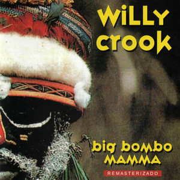

Big Bombo Mamma es el primer álbum de estudio del músico argentino Willy Crook, publicado en 1995 bajo el sello discográfico Música Maestro y producido por Daniel Melingo.
A fines de la década de 1980, luego de trabajar con músicos y grupos argentinos como Patricio Rey y sus Redonditos de Ricota o Los Abuelos de la Nada, Willy Crook emigró a España, donde residió durante varios años y participó en distintos proyectos musicales.
En ese período integró Lions in Love, banda formada por Daniel Melingo, el bajista español José Luis "Mc Cartney", el tecladista Guillermo Piccolini, el baterista Pablo Guadalupe y la cantante Stefanie Ringes. En 1994, tras la edición del álbum Psicofonías, el grupo se disolvió.
En 1995, ya de regreso en Argentina, Crook grabó Big Bombo Mamma, su primer álbum solista. El disco fue producido por Daniel Melingo y grabado entre España y Argentina.
La grabación se realizó antes de la formación de la banda Funky Torinos, por lo que participaron numerosos músicos. Posteriormente, el grupo acompañaría a Willy Crook en sus discos y presentaciones en vivo. Entre los colaboradores se encontraban integrantes de Lions in Love (Daniel Melingo, Pablo Guadalupe, Stefanie Ringes y Guillermo Piccolini), así como Fernando Samalea, Marcelo "Gillespi" Rodríguez, Fernando Lupano, Marcelo "Chocolate" Fogo y Martín Aloé, entre otros.
